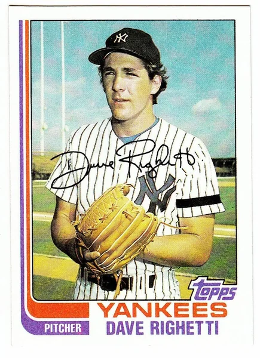
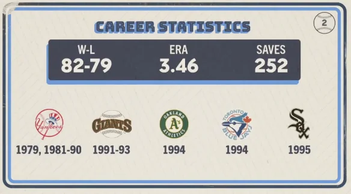

Dave Righetti "Rags"
Career Highlights & Facts
(Facts are AI-generated and may require verification)
- This pitcher became the first Yankee to throw a no-hitter since a legendary perfect game in the World Series.
- He was a key piece in a trade that sent a famous author of a tell-all book about the Bronx Zoo away from the organization.
- He achieved the rare feat of both throwing a no-hitter and leading the league in saves during his career.
Would you like to find out more about Dave Righetti?
Career Totals
| WAR | W | L | ERA | G | GS | SV | IP | SO | WHIP |
|---|---|---|---|---|---|---|---|---|---|
| 21.3 | 82 | 79 | 3.46 | 718 | 89 | 252 | 1403.2 | 1112 | 1.338 |
Statistics via Baseball-Reference.com
The Original Clue
